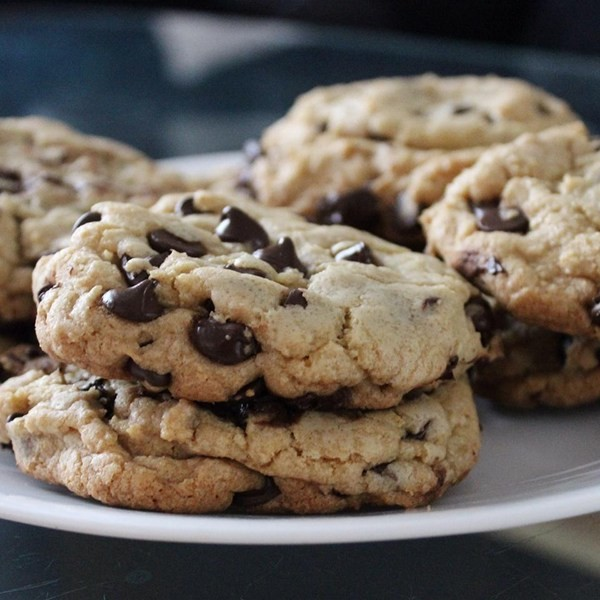
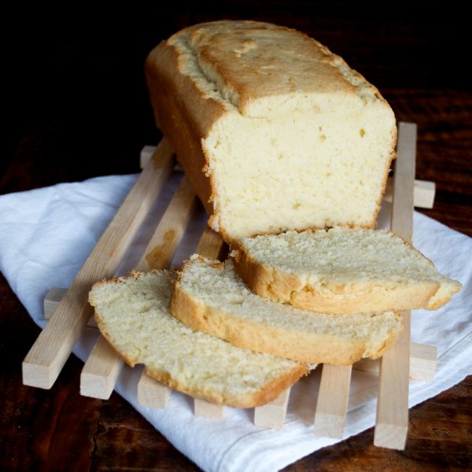
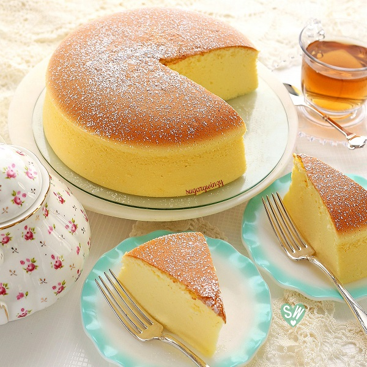
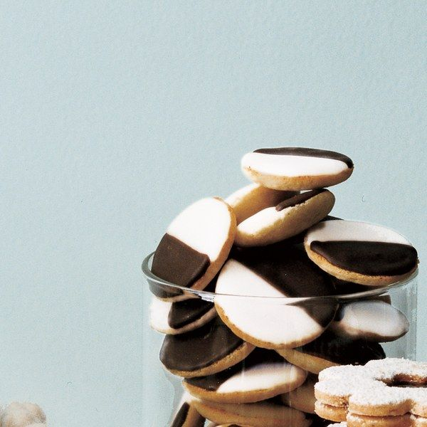
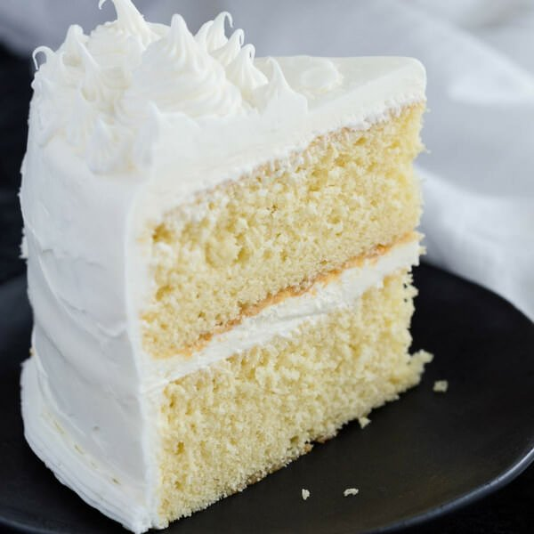
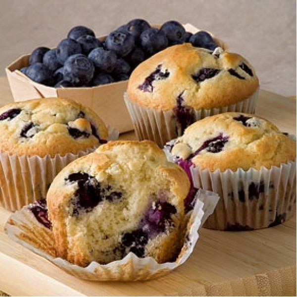
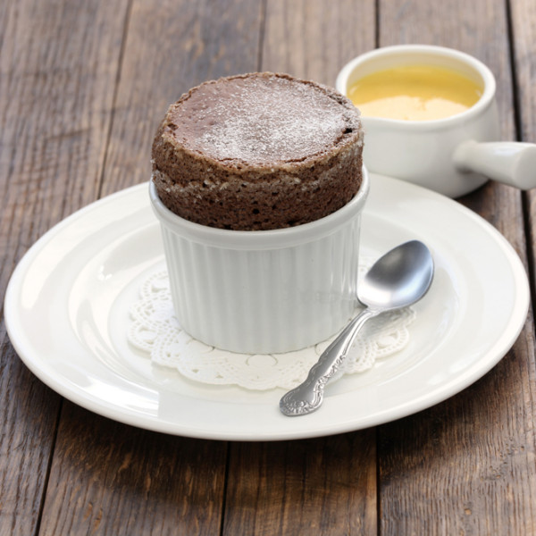
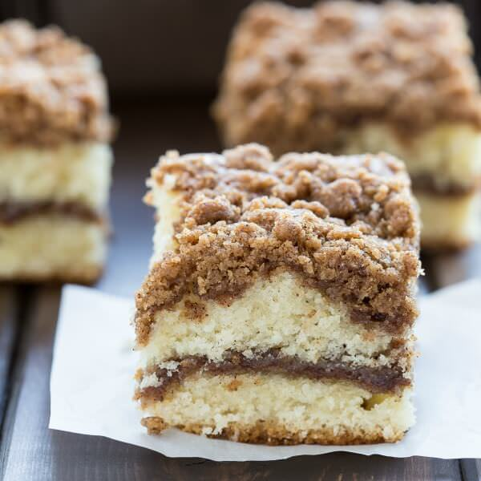

Learn
- Time to research recipes
- FB, Pinterest, TV, other social media for inspiration!
- Watch some videos and gather your tools!
These are my usual steps of learning a new recipe and trying out new tools!!
| Recipes | ||||
|---|---|---|---|---|
|
Table of Completed and Mastered Recipes! Try them yourself! |
||||
Chocolate Chip Cookies
|
Lemon Pound Cake
|
Japanese Fluffy CheeseCake
|
Black&White Cookies
|
|
Vanilla Cake
|
Blueberry Muffins
|
Dark Chocalate Souffle
|
Cinnamon Creme Cake
|
|
| More to come! | ||||